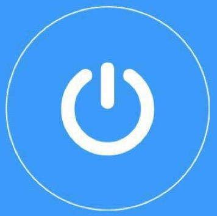

1. 下载win端shadowsocks软件。点此下载
2. 解压（例如：D:/shadowsocks），打开 ShadowsocksR-dotnet4.0.exe
3. 电脑左下角出现小飞机，鼠标右键可看见配置。
4. 配置描述：
1）系统代理模式
不经过代理直连: 关掉vpn连接。
PAC模式：访问国内站点不通过vpn的模式，一般选择此项。
全局模式：所有连接都通过vpn。
2）PAC
此项内容较多，但是是重点知识。以上的PAC模式就是根据此项的pac文件决定。不过只要 更新PAC为GFWList 可以更新成功即可。
如果更新不成功，提示错误。点此打开pac文件，全选复制，新建pac.txt文件，粘贴保存。 或者点此直接下载pac.txt文件。密码：4gtk 将此文件放至与该文件同级的文件夹。（例如：D:/shadowsocks）。即可。
其他选项可不了解
5. 服务器-->编辑服务器-->加号（添加新服务器）
6. 加密方式：aes-256-cfb 服务器IP和服务器端口和密码：发邮件至 xmmrhmm@gmail.com 获取。其他不变，保存。
7. 如果你添加了多个服务器，连接之前请确认你选择的服务器。
8. 选择pac模式。
1. 下载mac端shadowsocks软件。点此下载ssr-mac.dmg 下载太慢？点此百度云 下载密码： w8sh
2. 安装并打开 ssr-mac.dmg。
3. 右上角显示个小飞机 点击可开关。
4. 配置描述:
自动代理模式：表示连接国内不通过vpn，可加快访问速度
全局模式：所有连接都通过vpn
服务器：vpn的服务器配置，一会儿下面配置
编辑自动模式的PAC、从GFWList更新PAC、编辑GFWList的用户规则、这三项表示上面自动代理模式所访问的国外站点的PAC文件。软件一般 自带PAC文件，里面包含了很多国外站点，如果你选择了自动代理模式且所访问的站点不能访问，可以点击编辑自动模式的PAC，如果在文件中未搜到你所需访问的站点，可按原规则 添加一条新的站点。从GFWList更新PAC可以自动从网络上获取新的PAC文件
5. 服务器-->打开服务器设定-->
6. 加密方式为：aes-256-cfb 地址和密码：发邮件至 xmmrhmm@gmail.com 获取。
7. 选择服务器，打开小飞机。即可翻墙自由翱翔了。
1. 需要一个美国区appleID，翻墙在国内都被封掉，所以中国区iTunes Store没有提供下载。如果没有，可使用公用账号： svmgxxd@outlook.com 密码：Qq741852 安全起见，尽量下载完成就注销更换成自己的。 需要注意：只需注销iTunes Store，不是iCloud，苹果10版本之后，iCloud和iTunes Store整合在一起，很容易被一起注销。
2. 账户切换完成后，搜索wingy，下载如下图的app
3. 打开app，点右上角
4. 选择 Shadowsocks(R)
5. 加密方式为：aes-256-cfb 服务器，端口和密码：发邮件至 xmmrhmm@gmail.com 获取。其他不变，保存。
6. 返回app首页。点  第一次连接会提示你添加描述文件，请按指纹确认或输入密码。
7. 连接成功。